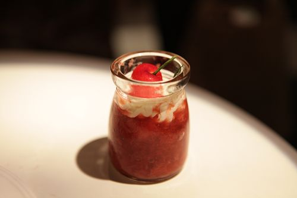
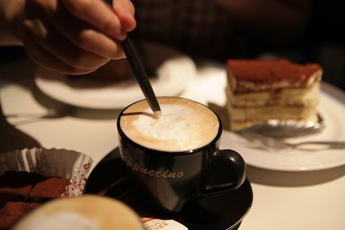
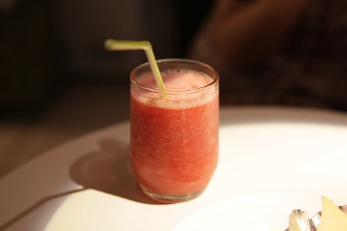

难忘*甜品 @ Jun 07, 2010
从瓷器店出来被女友领到一家”美丽心情“的甜品店。不确定是不是我吃过的最好吃的甜品，但它们的口味不比国外的甜品差多少，让人难忘。我想我还会去品尝N次。
坐下来吃进口，整个味觉融化开来。这么好吃的甜品，店名为何如此local？而不是起个国际化的店名？所谓“酒香不怕巷子深”，是这个道理吧。店面不大，甜品好卖，也有独自前来下午茶的。据说这家店开了有10年。。。恩，在这个城市居住二十几年，还是有许多我不知道的精彩。
西班牙丝绒巧克力；

草莓布丁，这个味道一般；

芝士蛋糕，我的最爱。还有一款榴莲蛋糕，喜欢榴莲味儿的可以尝试；

巧克力布朗尼；

女友在拿铁咖啡上画花脸雪糕；

鲜草莓汁；

16 Responses to “难忘*甜品”
2010-06-07
拍得真美，像实物在眼前一样。。。话说老是见到那只小手 俺很眼熟~~呵呵呵呵呵……
2010-06-07
在哪里~~~~~快告诉偶~~~~
2010-06-07
第一次去美丽心情时06年它刚开业时，小小而温馨的店，一下子就喜欢上了，它的蛋糕真的很可爱，老板是PL的三姐妹，印象好深，还有个帅哥在厨房里穿来穿去，这两年倒没去过，但还一直惦记着。打算这个月朋友生日时去定个创意蛋糕
2010-06-07
我怎么听说开了10年了？店主是金鹰酒点西餐厅的厨师出身？甜品很好吃哦~
2010-06-07
店主是三姐妹。不远处有他家的西餐店，也很好。。。茶。下回一定要去吃哦。
2010-06-07
我们几个当时就约了找时间一起去吃的，呵呵~你来么？
2010-06-07
06年可能是甜品店刚单分出来。以前是餐馆和西点合二为一的那家店。
2010-06-07
可惜我还没找到一家象样的甜品店呢:(
2010-06-07
好象提拉米苏是它家招牌。cheese蛋糕很赞，是同类里很有内涵的代表作。
2010-06-08
因为它现在的版上好像写的是五周年庆，我就以为那时才开的，要不就是甜品店和西餐店是两个时间开的，厨师是金鹰出来的，这个我也知道，我打算这周去定个可爱的生日蛋糕给朋友，好期待啊
2010-06-08
这家甜品很有名啊，可以订制造型独特的生日蛋糕，去年朋友生日聚会吃过一次，很喜欢！
2010-06-08
以前是开在西桥的，现在搬到江苏路来了。
2010-06-08
啊！现在不在西桥了?
2010-06-08
西桥和江苏路都有哇。
2010-06-09
有点名气，就是卡路里太高：）
2010-06-09
“美丽心情”这个名字取得不错~
Leave A Reply
存档只读，评论已关闭。